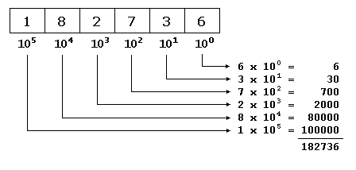
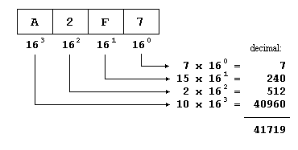

- Tutorials
- Numerical Bases
Numerical Bases
Since we were kids, we have all used decimals to express quantities. This nomenclature that seems so logical to us may not seem so to an inhabitant of Classical Rome. For them, each symbol that they wrote to express a number always represented the same value:I 1
II 2
III 3
IV 4
V 5
All the I signs always represents the value 1 (one) wherever they are placed, and the V sign always represents a value of 5 (five). Nevertheless that does not take place in our decimal system. When we write the decimal symbol 1 we are not always talking about a value of one (I in Roman numbers). For example:
1 I
10 X
100 C
In these cases, our symbol 1 does not have always a value of one (or I in Roman numbers). For example, in the second case, the symbol 1 represents a value of ten (or X in Roman) and in the third one, 1 represents a value of one hundred (or C).
For example:
275 is not equivalent to 2+7+5, it could rather be decomposed as 200+70+5:
200
+ 70
5
---
275
therefore, the first "2" sign is equivalent to 200 (2 x 100), the second "7" sign is equivalent to 70 (7 x 10) whereas the last sign corresponds to the value 5 (5 x 1).
This is because our system is a positional numeral system. Therefore, the value of a given digit depends on its position within the entire number being represented. All the above can be mathematically represented in a very simple way. For example, to represent the value 182736 we can assume that each digit is the product of itself multiplied by 10 powered to its place as exponent, beginning from the right with 100, following with 101, 102, and so on:

Octal numbers (base 8)
Like our "normal" numbers are base 10 (or radix 10) because we have 10 different digits (from the 0 to the 9):0123456789
the octals numbers include only the representations for the values from 0 to 7:
01234567
and, therefore, its mathematical base is 8. In C++ octal numbers are denoted by beginning always with a 0 digit. Let's see how we would write the first numbers in octal:
octal decimal
----- -------
0 0 (zero)
01 1 (one)
02 2 (two)
03 3 (three)
04 4 (four)
05 5 (five)
06 6 (six)
07 7 (seven)
010 8 (eight)
011 9 (nine)
012 10 (ten)
013 11 (eleven)
014 12 (twelve)
015 13 (thirteen)
016 14 (fourteen)
017 15 (fifteen)
020 16 (sixteen)
021 17 (seventeen)
Thus, for example, the number 17 (seventeen, or XVII in Roman) it is expressed 021 as an octal number in C++. We can apply the same mechanism that we saw previously for decimal numbers to the octal numbers simply by considering that its base is 8. For example, taking the octal number 071263:

therefore the octal number 071263 is expressed as 29363 in decimal numbers.
Hexadecimal numbers (base 16)
Like decimal numbers have 10 different digits to be represented (0123456789) and octal numbers have 8 (01234567), hexadecimal numbers have 16 different digits, that are represented by the numbers from 0 to 9 and the letters A, B, C, D, E and F, which together serve us to represent the 16 different symbols that we need to express base 16 numbers:hexadecimal decimal
----------- -------
0 0 (zero)
0x1 1 (one)
0x2 2 (two)
0x3 3 (three)
0x4 4 (four)
0x5 5 (five)
0x6 6 (six)
0x7 7 (seven)
0x8 8 (eight)
0x9 9 (nine)
0xA 10 (ten)
0xB 11 (eleven)
0xC 12 (twelve)
0xD 13 (thirteen)
0xE 14 (fourteen)
0xF 15 (fifteen)
0x10 16 (sixteen)
0x11 17 (seventeen)
In C++, hexadecimal numbers are preceded by 0x (zero, x).
Once again we can use the same method to translate a number from a base to another one:

Binary representations
Octal and hexadecimal numbers have a considerable advantage over our decimal numbers in the world of bits, and is that their bases (8 and 16) are perfect multiples of 2 (23 and 24, respectively), which allows us to make easier conversions from these bases to binary than from decimal numbers (whose base is 2x5). For example, suppose that we want to translate the following binary sequence to numbers of other bases:110011111010010100
In order to translate it to decimal we would need to conduct a mathematical operation similar to the one we have used previously to convert from hexadecimal or octal, which would give us the decimal number 212628.
Nevertheless to pass this sequence to octal it will only take us some seconds and even the less skilled in mathematics can do it just by seeing it: Since 8 is 23, we will separate the binary value in groups of 3 numbers:
110 011 111 010 010 100
and now we just have to translate to octal numberal radix each group separately:
110 011 111 010 010 100
6 3 7 2 2 4
giving the number 637224 as result. This same process can be inversely performed to pass from octal to binary.
In order to conduct the operation with hexadecimal numbers we only have to perform the same process but separating the binary value in groups of 4 numbers, because 16 = 24:
11 0011 1110 1001 0100
3 3 E 9 4
Therefore, the binary expression 110011111010010100 can be represented in C++ either as 212628 (decimal), as 0637224 (octal) or as 0x33e94 (hexadecimal).
The hexadecimal code is specially interesting in computer science since nowadays, computers are based on bytes composed of 8 binary bits and therefore each byte matches with the range that 2 hexadecimal numbers can represent. For that reason it is so frequently used to represent values translated to or from binary base.